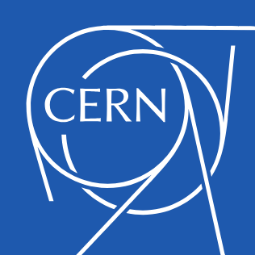

WorldWideWeb: Information available from CERN.
The WorldWideWeb (W3) is a wide-area hypermedia information retrieval initiative aiming to give universal access to a large universe of documents.
Everything there is online about W3 is linked directly or indirectly to this document, including an executive summary of the project, Mailing lists , Policy , November's W3 news , Frequently Asked Questions .